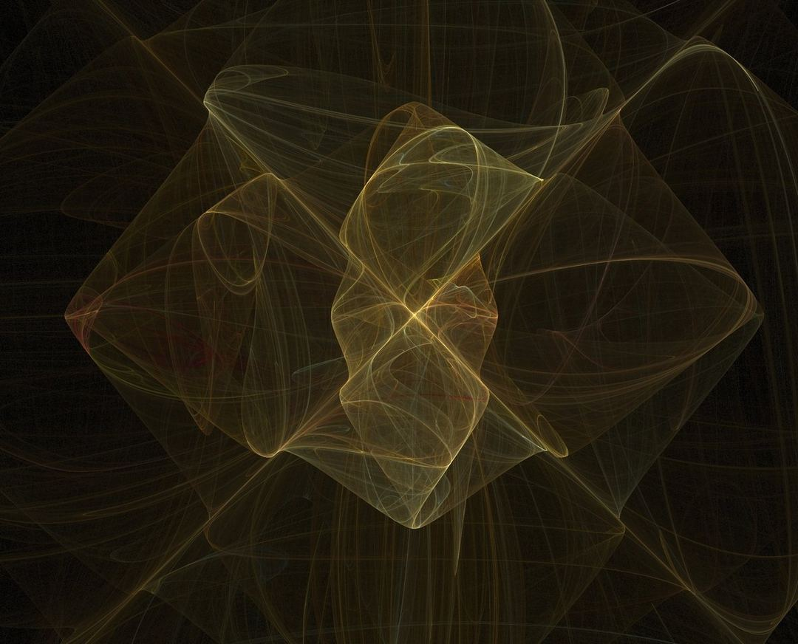
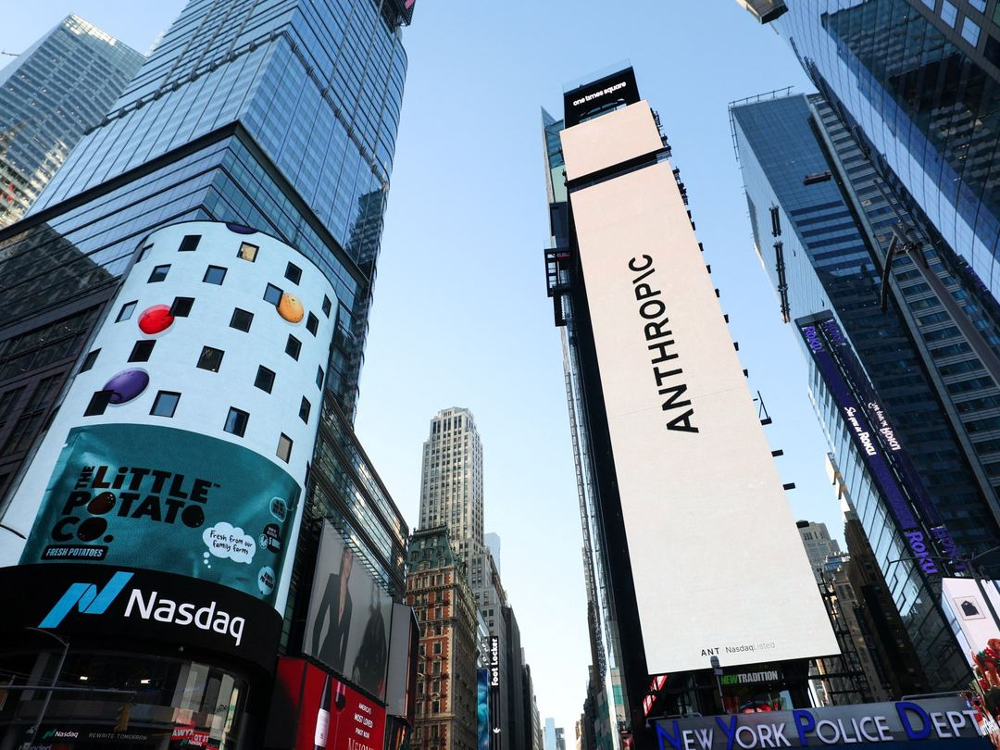
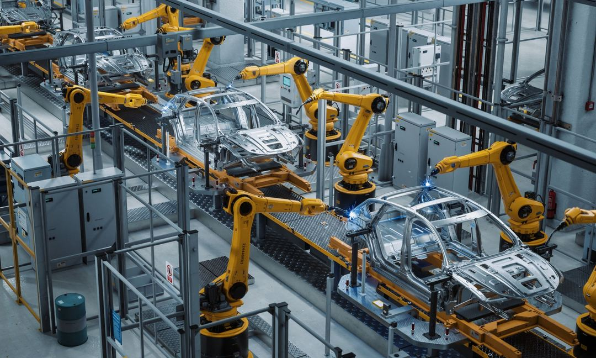
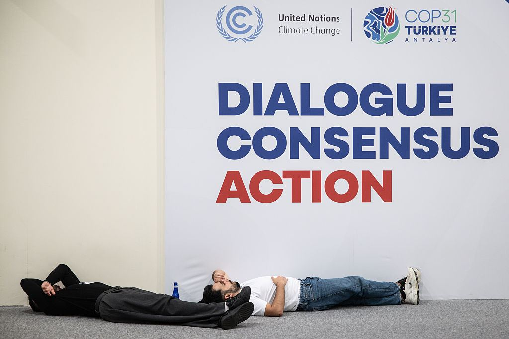

国内热榜 · 精选
全球实时
AI 与 Agent 圈
8 条Claude 协助证明黎曼猜想获 Lean 认证，Anthropic 以史上最大 IPO 上市，GPT-6.2 与 Gemini 4 Neon 同周打响价格战。
过去一周 AI 圈同时迎来科学突破与资本大事件：Anthropic 数学家 Levent Alpöge 与 Claude 合作的黎曼猜想 Lean 证明获 Lean 与 Mathlib 社区认证，登顶 Hacker News；Anthropic 以 813 亿美元募资完成史上最大 IPO。模型侧则进入降价与分工竞争，OpenAI、Google、阿里巴巴、Thinking Machines 相继发布新模型，开源与本地 AI 社区也在围绕推理引擎与工具链激烈讨论。

Claude 协助的黎曼猜想证明获 Lean 与 Mathlib 社区认证
Anthropic 数学家 Levent Alpöge 于 11 月 20 日发布与 Claude 合作完成的黎曼猜想 Lean 4 证明，含 175,187 个文件、约 1,700 万行代码，另称涵盖广义黎曼猜想；11 月 21 日 Lean 与 Mathlib 社区联合声明认证其陈述与证明正确，MIT 的 Andrew Sutherland 独立编译全部模块无错误。证明目前只有 Lean 代码形式、可读版本尚未出现，Clay 千禧年奖仍需正式发表与长期审查。

Anthropic 完成史上最大 IPO，首日收涨 17%
Anthropic 以每股 83 美元定价、发行 9.8 亿股，募资 813 亿美元，超过 SpaceX 此前 750 亿美元的纪录，成为史上最大 IPO；11 月 19 日在纳斯达克以代码 ANT 上市，开盘 111.50 美元、较发行价涨 34%，收于 97.17 美元、涨约 17%。另有 260 亿美元同期私募配售，总募资约 1,073 亿美元，首日完全摊薄估值约 1.76 万亿美元。

GPT-6.2 Astra / Sol 发布，Gemini 4 Neon 以半价应战
OpenAI 于 11 月 17 日发布 GPT-6.2 Astra 与 Sol，Astra 开放了此前仅限受邀安全团队的网络安全能力，输入价 8 美元/百万 tokens，较前代低 20%；Google 次日发布 Gemini 4 Neon，输入价 3 美元/百万 tokens，不到前沿模型的一半，并在法律与税务基准上排名第一。同周 Google 还推出 Gemini Decision 1，微软推出 Microsoft-Decision-1.1，决策类小模型成为新的价格竞争点。

Claude Fable 5.2 登顶 Artificial Analysis 指数，Meta 推超低价 Muse Ember
Anthropic 于 11 月 9 日发布 Claude Fable 5.2，Artificial Analysis Intelligence Index 得分 65，领先 Gemini 4 Carbon 的 60 与 Claude Opus 5.5 的 59；同期发布的 Claude Mythos 5.2 仅面向受审核的网络安全与生命科学机构。Meta 同日发布 Muse Ember，输入价 0.10 美元/百万 tokens，定位为高频重复 Agent 任务的廉价执行模型，与规划型大模型形成分工。
Thinking Machines 发布可跑笔记本的开源权重模型 Inkling 2 Mini
Thinking Machines Lab 于 11 月 20 日发布 Inkling 2 Mini：26.4B 参数 MoE、每 token 激活 3.4B，采用循环 Transformer 架构——中间 12 层每 token 重复运行 3 次，权重约 20GB、Apache 2.0 开源，支持 1M 上下文，目标是在 MacBook Pro 与 DGX Spark 等本地设备上运行。Vals CyberBench v1.1 得分 74.58%，与 Claude Opus 5.5 持平。

阿里巴巴发布 Qwen4-Max：2.4T 参数、1M 上下文，但旗舰版仅 API 可用
阿里巴巴于 11 月 16 日正式发布 Qwen4-Max，MoE 架构总参数 2.4 万亿、每 token 激活 710 亿，原生视觉、1M 上下文，称在编码、Agent 任务与视觉推理基准上排名靠前，单任务平均成本较 Qwen3.8-Max 低约 60%。与以往 Qwen 旗舰不同，Qwen4-Max 不提供可下载权重，仅通过 QwenCloud API 与阿里应用访问，小尺寸开源权重版承诺后续发布、未给日期。
GitHub 热门：ECC 与 Nous Hermes Agent 领跑 Agent 工具链
11 月 18 日 GitHub AI 热门报告显示，Agent 工程系统 ECC 以约 306.3k Stars 居核心榜首，当日新增约 1.1k Stars，支持 Claude Code、Codex 等多 Agent 框架；Nous Research 的自改进 Agent Hermes Agent 约 264.4k Stars，主打从经验中创建技能、跨会话记忆用户。Firecrawl（约 202.8k Stars）等 Agent 网络数据基础设施也持续高增长，反映 Agent 工具链仍是开源最热方向。

r/LocalLLaMA 热议“Stop using Ollama”，本地推理工具链走向成熟
r/LocalLLaMA 上周置顶帖“Stop using Ollama”引发本地 AI 社区大讨论，批评 Ollama 长期未在许可证中致谢 llama.cpp、模型以专有哈希 blob 存储、性能不及原生 llama.cpp 等问题，社区转而推荐 LM Studio、Jan AI、vLLM 等按场景分流的替代方案。同期的热门讨论还包括上下文长度是否停滞、约 100B 开源模型对少数实验室的依赖等，显示本地模型圈的焦点已从“能不能跑”转向工具治理与长期可持续性。
全网科技
7 条Anthropic 史上最大 IPO 撞上纳指暴跌，芯片、航天与安全漏洞同周刷屏
过去一周科技面以市场动荡为主线：Anthropic 以 83 美元定价、募资约 813 亿美元上市，创史上最大 IPO，却没能止住美股抛售，纳指录得 2020 年 3 月以来最差一周。与此同时，Nvidia 高管变动与财报、SpaceX 星舰首次回收上面级、NGINX 五个 9.2 分严重漏洞、微软 365 近一日断邮，以及 Cybertruck 停产与内存涨价，共同构成了本期最热的科技议题。

Nvidia 财报大涨却遇 CEO 离任风波，芯片股 11 月 5 日集体暴跌
Nvidia 第三季度营收 1158 亿美元，同比增 103%，并预计第四季度营收 1300 亿美元；AMD 第三季度营收 134 亿美元，同比增 45%。但 CEO 黄仁勋离任引发调查与 10-Q 延期，叠加 11 月 3 日美国中期选举后市场担忧 AI 数据中心受限，11 月 5 日 AMD 跌 17.3%、Nvidia 跌 9.3%、Intel 跌 10.3%。Intel 则在 11 月 18 日宣布签下首个 18A 外部客户，当日股价反弹约 7%。

SpaceX 星舰 Flight 15：上面级首次被塔臂回收，助推器失联坠海
11 月 13 日，星舰第 15 次试飞从得州 Starbase 升空，上面级 Ship 42 入轨并成功部署 26 颗 Starlink V3 卫星，绕地约 22 小时后于 11 月 14 日被发射塔机械臂首次捕获回收。但 Super Heavy 助推器 Booster 22 在返场途中发动机提前关机、偏离回收路径，被导向墨西哥湾并爆炸，双回收目标只完成一半。NASA 局长 Jared Isaacman 对此次飞行表示肯定，星舰是 NASA 登月着陆器方案的关键。

NGINX 曝五个 CVSS 9.2 严重漏洞，可未授权远程执行代码，约 880 万服务暴露
11 月 18 日，F5 发布安全更新，披露 NGINX 的五个严重漏洞，统称 NGINX2Root，其中 CVE-2026-123007（HTTP/2 流控整数下溢，影响版本可追溯至 2015 年的 1.9.5）与 CVE-2026-123633（HTTP/2 use-after-free）均可未授权远程执行代码，CVSS 4.0 均为 9.2 分。研究者已证实可执行代码，Xint 还演示了结合 Linux 内核漏洞提权至 root。修复版为开源 1.30.7 / 1.31.9，无法立即升级者建议先关闭 HTTP/2。
苹果一周连发多款新品：iPhone 17e 与 599 美元 MacBook Neo 领衔，M5 全线铺开
苹果在 11 月当周集中上新：iPhone 17e 搭载 A19 芯片与 4800 万像素 Fusion 相机，256GB 起步售价 599 美元；MacBook Neo 搭载 A18 Pro、无风扇设计，同样 599 美元起，为苹果史上最便宜笔记本；另有搭载 M5 的 MacBook Air、搭载 M5 Pro / M5 Max 的 MacBook Pro、搭载 M4 的 iPad Air 以及新款 Studio Display。MacBook Air 标配存储翻倍至 512GB。

特斯拉砍掉 Cybertruck 改产 Cybercab，Rivian 靠 R2 逆势上扬
特斯拉决定停产 Cybertruck，计划 2027 年年中前后将产线转产自动驾驶出租车 Cybercab。Cybertruck 原计划年产 12.5 万辆，但 2026 年前三个月仅售出 11,586 辆，且每辆都在亏钱。与此同时，Rivian 第三季度营收 21.6 亿美元、同比增 38%，将全年交付指引上调至 6.7–7 万辆；其 R2 SUV 起价约 4.5 万美元，获 MotorTrend 2027 年度 SUV 称号；美国 9 月纯电注册量同比跌 44%，特斯拉与 Rivian 合计占近三分之二。

微软 365 全球断邮近 24 小时：7 月埋下的缺陷被 Teams 故障转移引爆
11 月 12 日 11:20（美东）至 11 月 13 日 11:10，微软 365 的 Exchange Online 全球大面积无法访问，Outlook 邮箱打不开、邮件延迟，Teams、Copilot 等也受波及。微软初步事后报告称，根源是 7 月一次更新引入的网关服务器潜伏缺陷：Teams 在故障前约 15 小时切换到 Exchange 用的网关、叠加约 14% 网关容量因维护下线与美国流量高峰，触发锁竞争耗尽 CPU 与内存，高峰时逾 80% 网关服务器无响应。微软称无网络攻击、无邮件永久丢失，最终通过回退缺陷代码路径修复。

内存与 SSD 涨价潮蔓延到消费端：NAND 四季度合约价再涨 15–20%
TrendForce 预计 2026 年第四季度 NAND 闪存合约价环比再涨 15–20%，企业级 SSD 涨幅更高；256GB TLC SSD 合约价已从一年前的 33.30 美元涨至约 134.20 美元，涨幅 303%。GamersNexus 的统计显示，2TB NVMe SSD 均价已从约 190 美元涨至近 450 美元。主因是 AI 数据中心抢占产能，厂商优先供应高利润企业级产品，Kioxia 称今年产能已售罄，短缺预计延续至 2027 年，黑五消费电子涨价已成定局。
时代周刊 · TIME
6 条时代周刊精选
黄仁勋戏剧性回归英伟达 CEO：六个待解的问题
辞职仅 11 天后，黄仁勋重返英伟达 CEO 之位——此前他因一桩间谍指控风波离任。TIME 梳理了这次回归背后的六个关键问题，包括指控本身、董事会态度与华盛顿的角色。

台湾如何把科技优势变成安全护盾
从先进芯片到无人机群，台湾正押注用科技实力威慑北京。TIME 剖析这场豪赌的逻辑与风险：当「硅盾」成为战略核心，它到底能不能挡住真正的冲突。

COP31 谈判破裂，揭示气候行动的新现实
联合国气候大会 COP31 未能达成新的全球协议。TIME 指出，不要把「没有新协议」误读为「没有国际行动」——气候治理正在进入一个去中心化的新阶段。

冈比亚如何帮罗兴亚人在海牙证明种族灭绝
当大国忙着为自己与盟友遮掩时，西非小国冈比亚在国际法院为罗兴亚人赢下了关键一步。TIME 复盘这场以小搏大的法律战，以及它对国际问责的意义。
埃博拉疫情为何停不下来：病毒学家 Sabeti 的解读
本轮埃博拉疫情为何蔓延得如此之快？计算生物学家 Pardis Sabeti 向 TIME 解释了失控的原因，以及人类要怎样才能真正跑在疫情前面。

感恩节周迎来超级月亮：本周抬头可见
一场天象秀赶在假期前登场——本周的「海狸月」将是今年最大的超级月亮之一。TIME 整理了最佳观赏时间和这轮满月的由来。